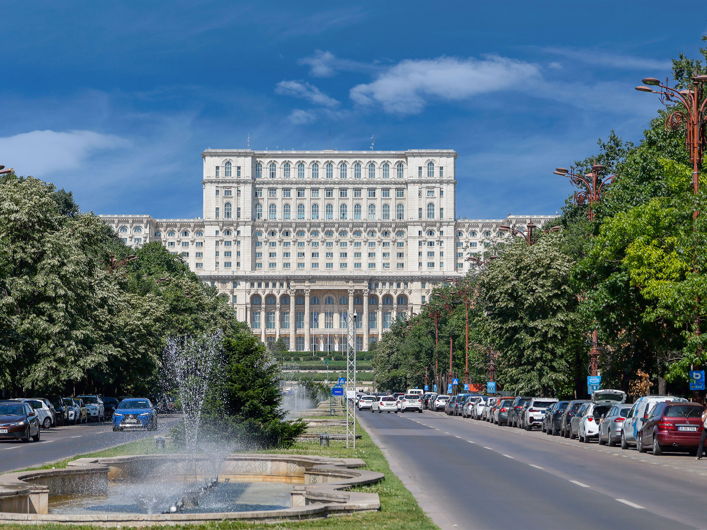
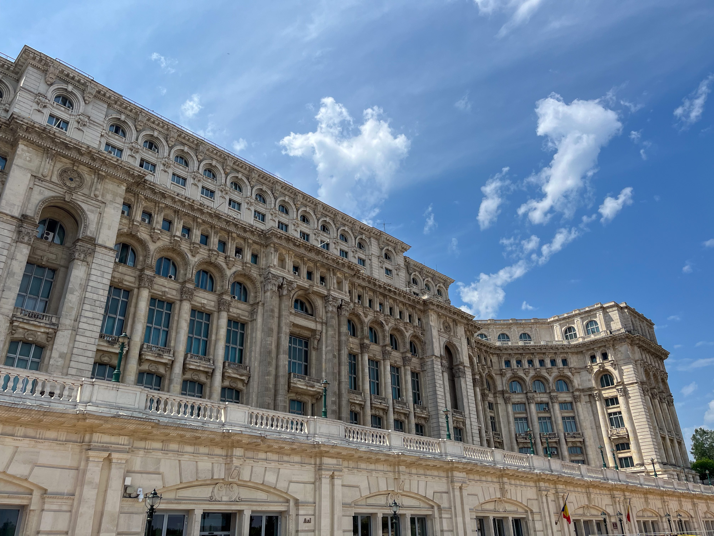
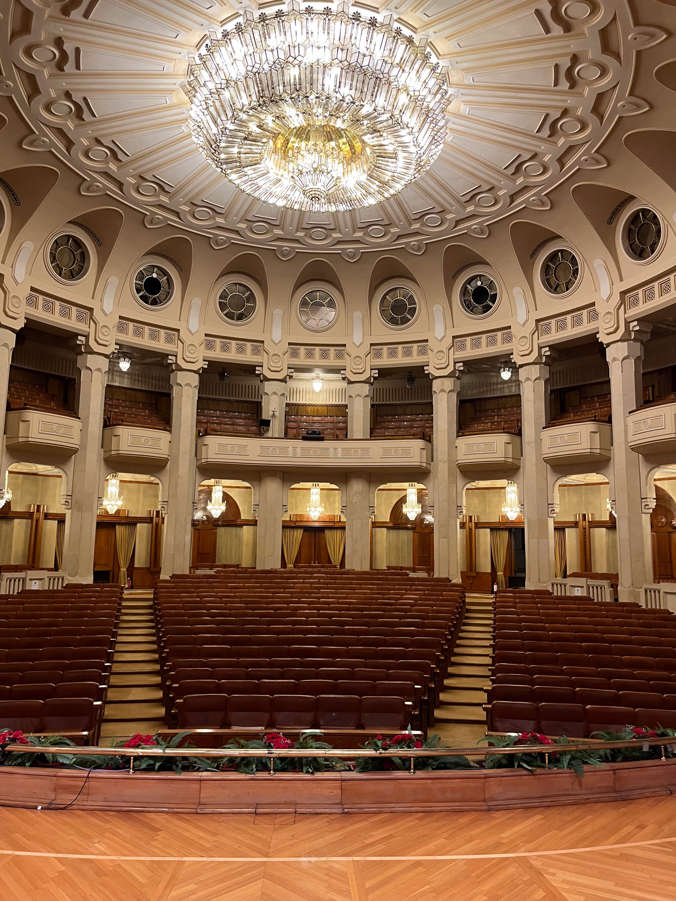
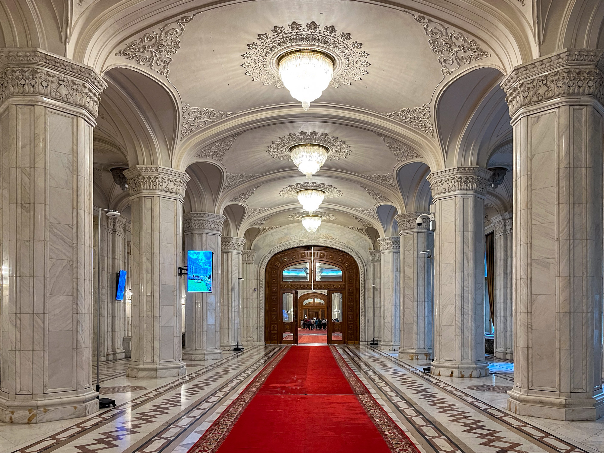
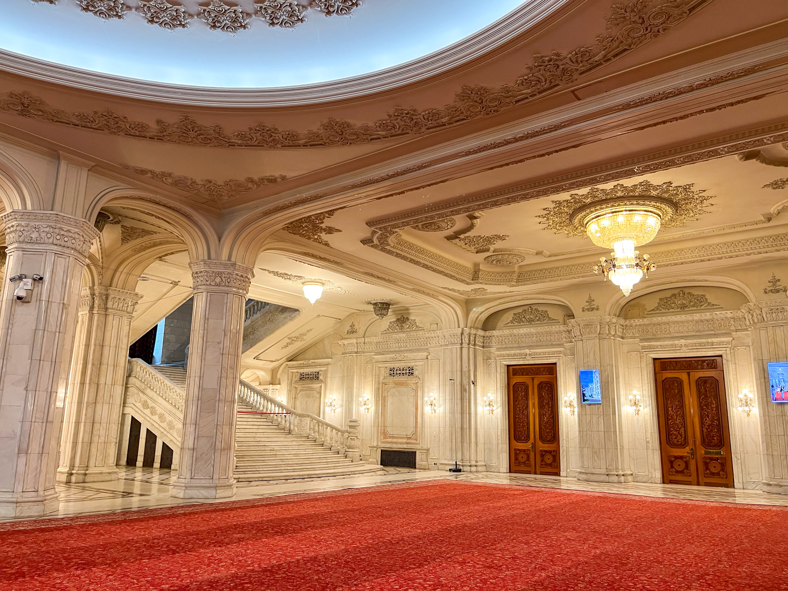
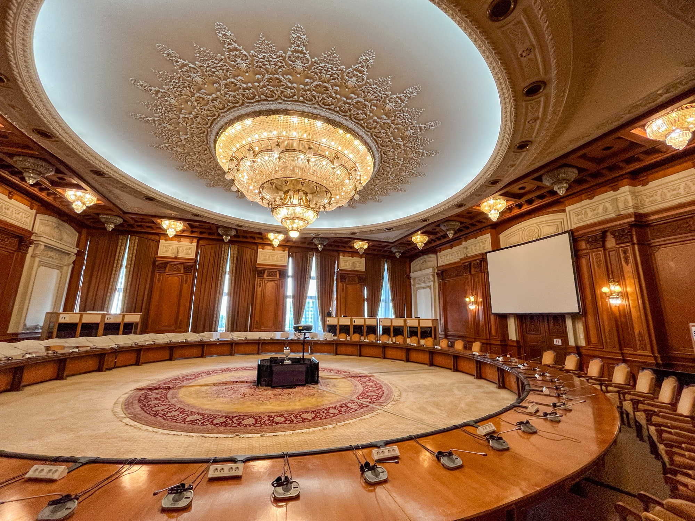
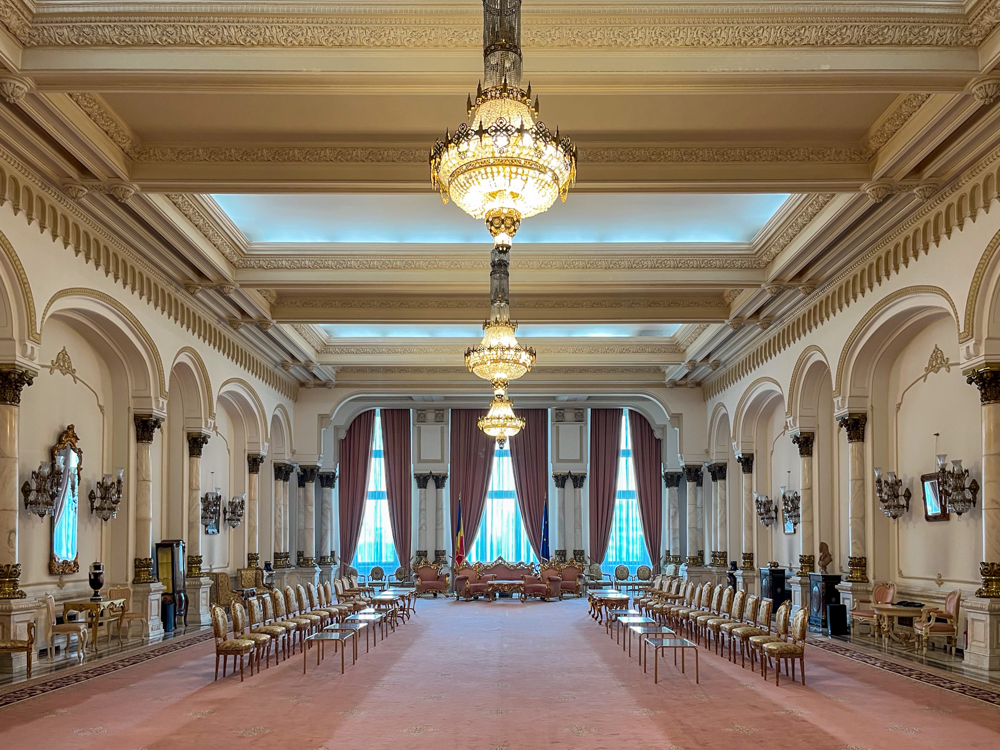

Built mostly during Nicolae Ceaușescu's dictatorship, the Palace of Parliament is a symbol of extravagance and excess. Its creation demanded vast amounts of money, time, and resources—imposing a significant economic strain on Romania. This stood in stark contrast to the widespread hardship and suffering endured by the Romanian people during Ceaușescu's regime.
Putting the size and scale of this building into perspective is difficult with just words and pictures. To see and experience it in person is the only true way to highlight the absurdity of its creation. In an attempt to communicate this absurdity, here is a collection of my photographs with key figures about the building.

40,000
people were displaced for the construction of the palace.
1984 to 1997
was the construction of the palace, achieving around 60% completion by the Romanian revolution and fall of Ceaușescu.
2nd
largest administrative building in the world, after the Pentagon in the United States.
7
hectares of land are covered by the building, making 365,000 square meters of floor space across its many floors.
84
meters above ground across (12 floors), 92 meters underground (8 floors), not including the top secret military bunker beneath that.

28
years old was the age of Anca Petrescu, the lead architect, at the start of the project.
701
architects worked on the building, plus thousands of engineers.
20,000
consturction workers, working 24/7 across three shifts a day.
27
deaths during constrution were officially recorded, with hundrends to thousands more allegedly unrecorded.

1,000,000
tons of concrete were used.
2,500,000
tons of the finest Romanian marble.
3,500
tons of crystal for chandeliers and other decorations.
2,800
chandeliers are spread throughout the building.
5
tons is the weight of the heaviest chandelier.
1,400
ceiling lights.
220,000
square meters of carpets.

1,100
rooms are contained within the whole building.
30
kilometers of staircases and corridors.
5%
of the building is seen on the standard Palace tour, with visitors setting foot in even less.

6 million
Euros is the estimated annual maintenance, heating, electricity, and lighting cost.
3-4 billion
Euros was the original construction cost estimate (adjusted to 5.8-7.8 billion Euros for 2024 inflation).
6 billion
Euros is the unofficial total estimated cost on compltion.
